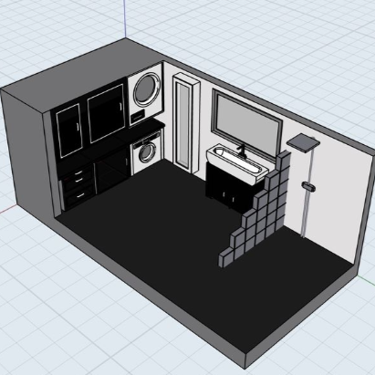
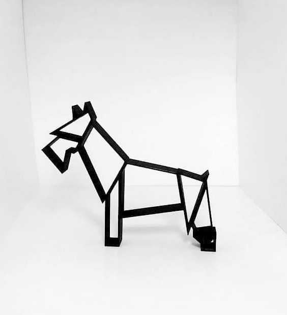
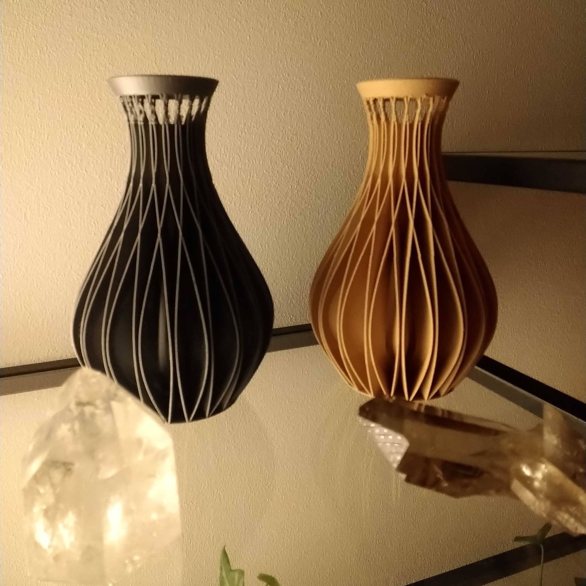

NP3Design
-

-

-

3D printvärlden
Nelson är en passionerad entreprenör med en vision att revolutionera produktdesign genom 3D-skrivarteknik. Han hade lärt sig använda avancerade 3D-designprogram och köpt en högpresterande 3D-skrivare för att förverkliga sina idéer. I sin lilla studio skapade han allt från innovativa hushållsverktyg till unika konstföremål. Varje design bar hans personliga prägel och lockade ett växande antal kunder. Trots sin kreativitet och hårda arbete stötte Nelson på ekonomiska hinder. Kostnaderna för material, underhåll av utrustning och marknadsföring var högre än intäkterna. Han försökte attrahera investerare men lyckades inte övertyga dem om projektets potential. Till slut tvingades han lägga ner sitt företag. Men Nelson såg det inte som ett misslyckande. Han hade utvecklat ovärderliga kunskaper inom 3D-design och tillverkning. Med sin erfarenhet började han frilansa, och hans passion för innovation levde kvar, i väntan på en ny chans att bygga något större.
"Klicka för se fler bilder"